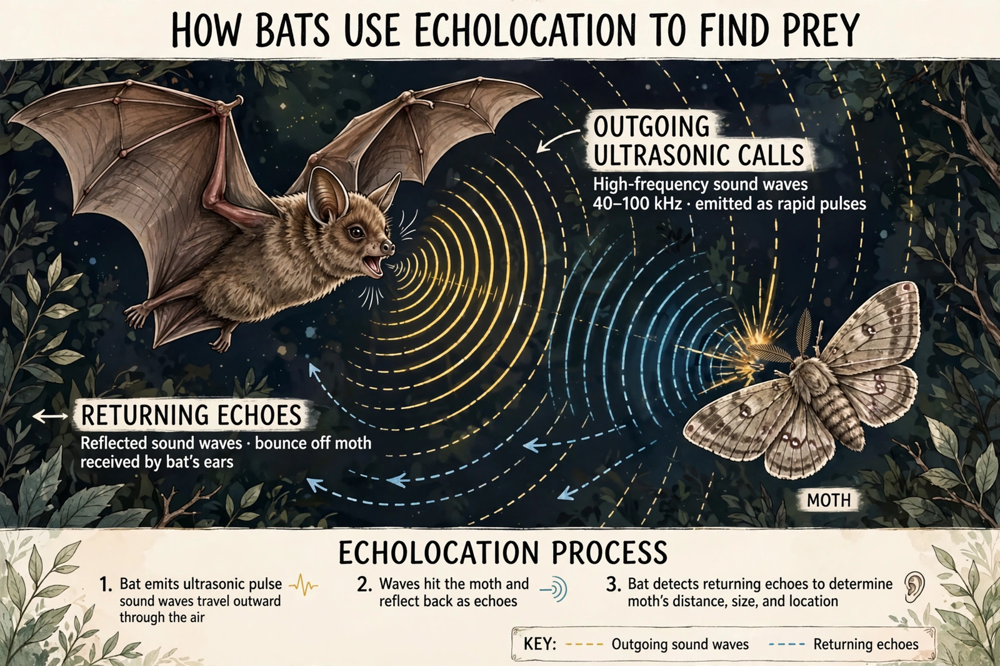

| Animal echolocation | |
|---|---|
 | |
| Also called | Biosonar |
| Found in | Most bats, toothed whales, some birds and shrews |
| Key researcher | Donald Griffin (coined "echolocation", 1944) |
Animal echolocation, also called biosonar, is the biological sonar used by several animal species. Echolocating animals emit calls into the environment and listen to the echoes that return from nearby objects; from the timing, intensity and spectral character of the echoes they build a detailed picture of their surroundings, locating prey and avoiding obstacles in total darkness or murky water.
More than 1,000 bat species echolocate, most of them emitting ultrasonic laryngeal calls between roughly 20 and 200 kHz. Species tune their sonar to their niche: constant-frequency calls detect the flutter of moth wings, while frequency-modulated sweeps give precise range resolution. Donald Griffin demonstrated the phenomenon experimentally in the late 1930s with Robert Galambos, building on Lazzaro Spallanzani's 18th-century observation that blinded bats navigate perfectly while deafened ones cannot.
Dolphins, porpoises and sperm whales generate clicks in nasal passages and focus them through the fatty melon on the forehead. Returning echoes are received through the lower jaw. Dolphin sonar can discriminate target composition, size and internal structure at ranges exceeding 100 metres, and remains a benchmark that artificial sonar systems struggle to match.
Oilbirds and some swiftlets echolocate with audible clicks in dark caves; a few shrews and tenrecs use simple sonar-like probing. Echolocating predators have driven an evolutionary arms race: some moths hear bat ultrasound and take evasive action or produce jamming clicks, and soft moth scales absorb sound to reduce echo returns.